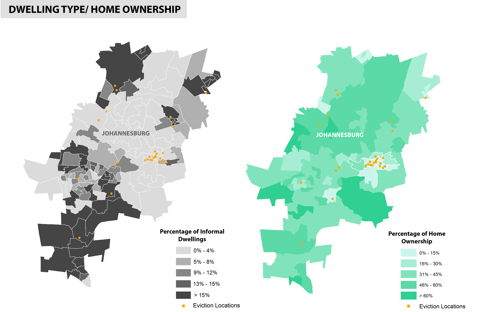
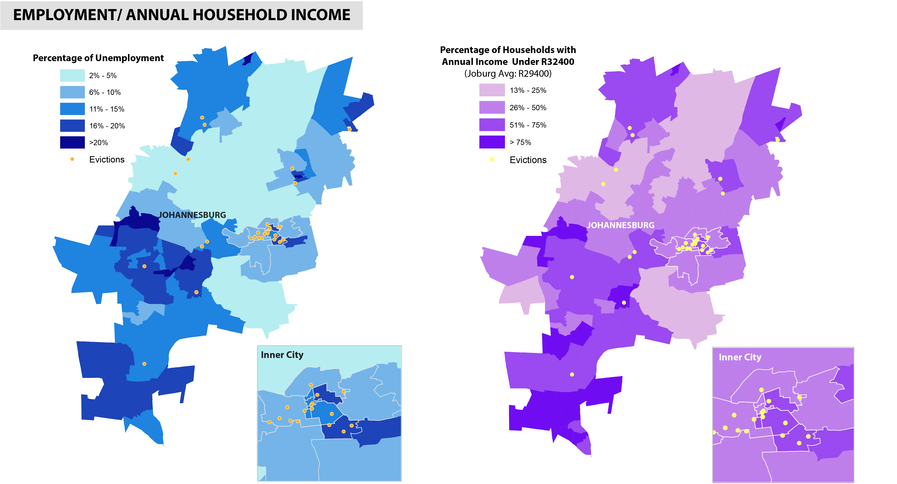
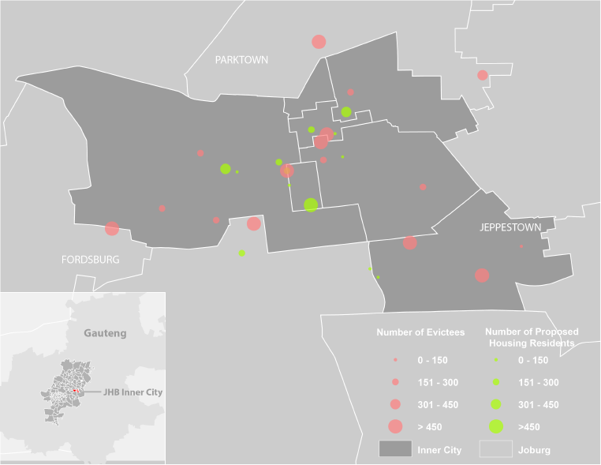

Project Idea
Eviction, as defined by the Merriam-Webster Dictionary, is the action of expelling somebody, normally a tenant, from their property. Eviction takes place through a variety of forms, and can lead to completely different results under each scenario. This project aims to explore the growing trend of evictions in Johannesburg centered around inner city. It is based on census and housing market data, and focused specifically on whether evictions will lead to segregation across grounds other than race.Background
South Africa has been experiencing evictions caused by racial legislations since as early as 18561
. Around 1950, evictions became frequent and violent with the legislation of Group Area Act. Under this act, evictions were legal. Evicted urban residents were resettled to suburban areas, while their original communities were dismantled. One of the most shocking cases at the time was the mass eviction in Sophiatown. commonly referred to as the "Chicago of South Africa", Sophiatown was a legendary black cultural hub. However, the mass eviction incidence completely destroyed the community, and even with the repairs during post-apartheid era, the cultural vibrancy and freedom there never fully recovered.
Sophiatown Eviction
Source: Jurgen Schadeberg
In recent years, evictions reappeared in Johannesburg with a different nature. It started around 2010 after the World Cup and became more frequent every year with a high proportion happening in inner city.Source: Jurgen Schadeberg
2
At the first glance, current evictions serve private property development purposes. They are mostly initiated by private owners within buildings that they bought. The evictions are generally carried out by security services, the so called 'Red Ants', who come unexpectedly to evict residents with or without an court order (as seen in the video below). 'Red Ants' have long been accused of brutality due to their violent eviction approach; including shootings and fires that have caused residents death.'Red Ants' Evict Dozens in Joburg
The video above shows the 'Red Ants' evicting dozens of residents in Johannesburg. If you take a closer look at the eviction scene, you may notice that officers from Johannesburg Metro Police, as well as sheriffs from the courts, have also shown up to witness, facilitate, and even enforce the evictions. These officials ignore how arbitrary and violent the evictions can often be. Their presence is proof that the city is being an indirect supporter of the evictions. Further evidence of this can be found in a 2015 leaked document of monthly contracts of the City government which revealed that the City spent around R20 million on security services for evictions.
The newly appointed Mayor of Johannesburg, Herman Mashaba, even publicly proposed a plan to evict ‘illegal occupants’ for more housing development. This proposal specifically targeted undocumented foreigners in inner city, and resembled the segregation legislation in 1950s by targetting certain groups of people in specific areas of the City to achieve policy goals.
However, unlike 60 years ago this practice is now unconstitutional to evict occupants without a court order. This change is due to the Prevention of Illegal Eviction Law from and Unlawful Occupation of Land Act which was passed in South Africa Constitutional Court in 1998.
City supported evictions are re-emerging without legislation, and this project aims to explore whether this trend would cause similar levels of segregation on grounds other than race ---- a new form of apartheid, zoomed into the inner city. This project consists of two parts working together to answer the question ‘what will the new grounds for segregation be?’ and ‘how will this new segregation will take place?'
Who is Affected?
While undocumented immigrants are said to be the target of future city supported evictions, demographic distributions across the city have still been more diverse and complicated than they were 60 years ago. By spatially projecting the collected evictions on demographic census data, the demographic characteristics of areas where most evictions happened can be identified. Within this project, this is considered to be the new grounds for segregation.Johannesburg: Percentage of Foreigners
Source: Angela Li
Data Source: South Africa National Census of 2011
Source: Angela Li
Data Source: South Africa National Census of 2011
As it is pointed out in the mayor’s eviction plan, the inner city has a relatively high percentage of foreigners, mostly from other Southern African Development Community (SADC) member countries. Although the data does not include a percentage of undocumented immigrants, it can be assumed that the unspecified category is encompassed of mainly undocumented immigrants as they likely do not want to disclose their identities. Even with the relatively high percentage of foreigners due to both legal and illegal immigration, South Africans still account for more than half of the population of Johannesburg. Therefor, it is unlikely that the evictions can be limited to only undocumented immigrants if conducted on entire hijacked buildings at a time. 
Percentage of Informal Dwelling/Homeownership
Source: Angela Li
Data Source: South Africa National Census of 2011
Source: Angela Li
Data Source: South Africa National Census of 2011
When looking at the dwelling types, the inner city actually has a very low percentage of informal dwellings (shacks). Evictions that have happened outside of the inner city are mostly in areas with very high percentages of informal dwellings. This aligns with the fact that inner city evictions have mostly happened in hijacked buildings while evictions at townships are mostly about shack clearance.
Addtionally, the inner city has a relatively low homeownership rate compared to other areas. The hijacked buildings are mostly rental occupied, where residents pay rents to the owners who are actually in control of the buildings. This leads to the conflicting reality that while residents are evicted from where they’ve lived for years under the false reason of illegal occupancy, they have actually been legally paying to live there.

Johannesburg: Percentage of Unemployment/Household Annual Income under R32800
Source: Angela Li
Data Source: South Africa National Census of 2011
The unemployment rate of in the inner city area ranges from 6% to 20%, while the areas of Hillbrow and Jeppetowns’ are higher than 20%. Annual Income of inner city is also relatively low, which is not surprising considering the high unemployment rate. On average, the area are filled with economically disadvantaged people who have relatively lower income living in rental housing.
Source: Angela Li
Data Source: South Africa National Census of 2011
Segregation or Not?
To explore possible segregation, housing data was analysed to identify potential housing options. Historically, the city always fails to offer alternative housing for evictees. Because of this, many evictees have to live in informal settlements, such as tents or shacks, for a long period of time follwing an eviction. To combat this, the new mayor has been promising new affordable housing development for the past year. 
Joburg: Comparison between evictees number and proposed housing units residents
Source: Angela Li
Data Source: Johannesburg Inner City Housing Implementation Plan
Source: Angela Li
Data Source: Johannesburg Inner City Housing Implementation Plan
As it is shown in the above map, which compares the total number of evictees to the total number of proposed housing residents, the total number of evictees in an area surpasses the proposed housing developments in the same area significantly. With evictions likely to continue growing under the mayor’s plan, and more than half of the new affordable residential project still under construction, evictees continue to struggle to find affordable housing alternatives within the inner city. This brings up the question, what affordable housing options exist within the city?

South Africa Housing Market Performance
Source: Center for Affordable Housing Finance in Africa
Source: Center for Affordable Housing Finance in Africa
Looking at the interactive map acove made by Center for Affordable Housing Finance in Africa, we can assume lower property values normally lead to a lower rental prices. The data clearly shows that cheaper government subsidized housing is largely concentrated in the southwest area of the city. Even for market rate housing, affordable units are mostly located in this area. Therefore, it is highly likely that evictees will target this area to move.
Interesting, looking back on the census data, this is exactly the area that currently has the highest unemployment rate and lowest household income. Based on that, the large population of evictees with low income would further the gap between the Johannesburg townships, eventually leading to even greater economic segregation.
Conclusion
Due to relatively low accuracy and availability of data, the scale of this analysis is limited. However, this research was still able to bring out the possible vision that increasing inner city evictions may be leading to growning economic segregation as a whole. While the mayor’s new plan might revive inner city to some extent, is this level of economic segregation a worthwhile price tag? Return to Student Projects